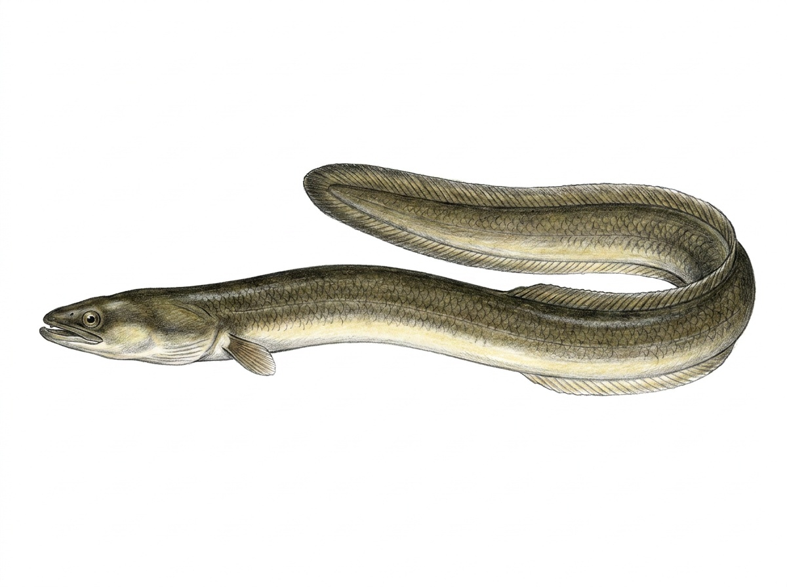

Shortfin Eel
Anguilla bicolor
The Shortfin Eel is a freshwater and migratory eel species native to Sri Lanka and widely distributed throughout the Indo-Pacific region. In Sri Lanka, it is found in rivers, streams, reservoirs, lagoons, and coastal freshwater habitats. Unlike most freshwater fishes, it has a unique life cycle where adults migrate to the ocean to reproduce, while young eels return to freshwater environments to grow and mature. This secretive, elongated fish is mainly active at night and spends much of the day hiding among rocks, submerged roots, mud, and aquatic vegetation. It is well adapted to both freshwater and brackish-water environments. The Shortfin Eel is a carnivorous predator that feeds on small fish, aquatic insects, worms, crustaceans, and other small aquatic animals. The Shortfin Eel plays an important ecological role as a native predator in Sri Lanka’s freshwater ecosystems. Its migratory life cycle connects freshwater habitats with marine environments, making it an important species for maintaining aquatic ecosystem balance. However, habitat degradation, barriers to migration, and overfishing can threaten eel populations.